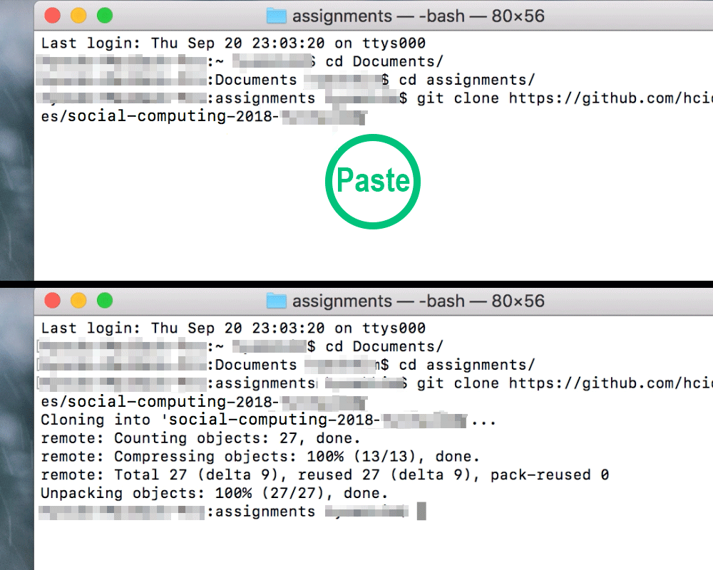
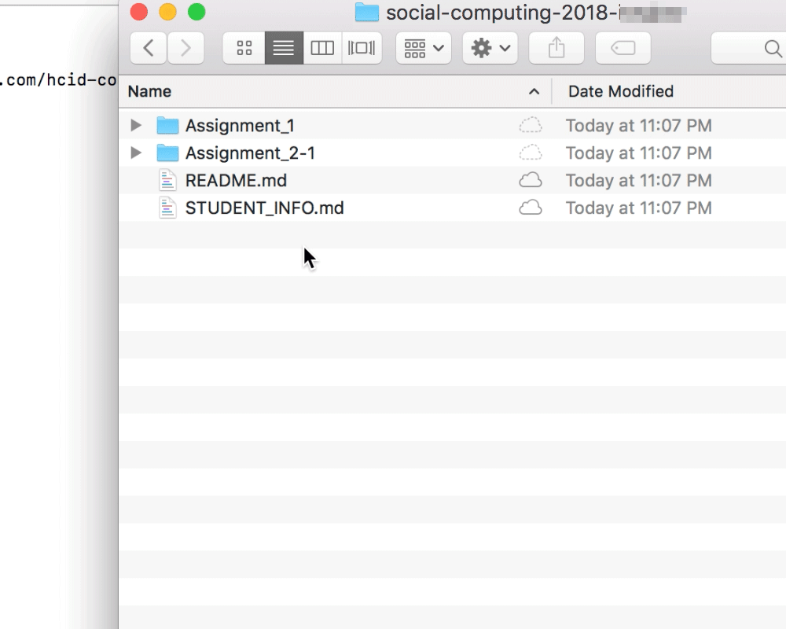

2018 가을학기
소셜 컴퓨팅
과제 제출 방법
-
익숙하지 않은 학생들을 위해 이번 학기 과제 제출 방법을 상세히 안내합니다. pc에 git이 설치되어있고 github 계정이 있다고 가정합니다.
-
다음 안내를 따라 github을 이용하여
(1)각자 github 사이트에 자신의 private 과제함을 만들고,
(2)자신의 컴퓨터에 자신의 과제함을 복사하여
(3)과제를 하고,
(4,5)git을 통해 과제를 제출할 수 있습니다.
-
1-2번은 이번 학기에서 처음에 한번만 잘 하면 됩니다.
-
매번 새로운 과제를 할 때마다 3-5번을 반복합니다.
-
수업을 잘 들었다는 가정 하에 git과 github에 대한 자세한 설명은 생략합니다. 다음 링크들을 참고하시고 구글링을 통해 기본적인 git 이용법을 이해하세요.
완전 초보를 위한 깃허브
/
누구나 쉽게 이해할 수 있는 Git 입문
-
과제 채점 기준 :
표절, delay(각 과제 파일별 최종 push 시각 기준)만 하지 마세요.
상세 기준은 TBA
1. Accept Assignments
- 공지로 안내받은 과제 링크에 접속합니다.
- github 로그인 후 [Accept Assignment]를 클릭하면 각 학생의 과제함(repository)이 생성됩니다.
- 과제함의 사용법 안내사항을 따라 다음으로 진행합니다.
2. Clone your Repository
-
개인 pc에서 과제를 하기 위해서는 터미널(cmd) 혹은 각자의 git 도구를 이용하여 각자의 github 과제함을 내 컴퓨터로 clone해야 합니다.
(repository download와 다릅니다. git 관련 정보를 함께 저장해야 하므로 반드시 clone을 통해 진행해주세요.)
-
우선 1.에서 만든 개인 과제함 주소를 확인합니다. 학기 내내 각자의 과제함(repository)을 이용할 예정이니 인터페이스에 익숙해지세요. 미리 주소를 복사합니다.
(개인 과제함 주소 : https://github.com/hcid-courses/social-computing-2018-본인github아이디)
-
터미널(cmd)을 이용하여 과제함 폴더를 보관할 위치로 이동합니다. 예를 들어 Documents 폴더에 assignments라는 폴더를 만들고 그 안에 과제함을 넣기로 합니다.
"git clone 개인과제함주소" 명령을 이용하여 내 과제함을 현 위치에 clone합니다.

-
내 컴퓨터에 과제함 폴더가 생겼습니다. 이제 내 jupyter notebook에서 과제를 할 수 있습니다!

-
잊지 말고 STUDENT_INFO.md 파일을 수정하여 내 이름, 학과, 학번 등 개인정보를 반영해주세요. 과제 채점에 꼭 필요합니다.

3. Do your Assignment
-
각 과제의 세부 안내사항은 개별 과제 폴더 안의 NOTE.md 파일을 꼭 참고하세요.
-
과제를 하기 위해서는 과제 템플릿 코드를 다운받아 압축을 풀고 내 과제함 폴더로 이동시켜야 합니다.
(과제 1 - CodeCademy 제외; 과제 1에서는 캡처 이미지를 Assignment1 폴더에 넣습니다)
예를 들어 "Assignment #2-1"을 하려면 과제 페이지에서
과제2-1 template code를 받아서 압축을 풀고 내용물인 Week 2 - Exercise.ipynb을 내 과제함 폴더의 Assignment2-1 폴더 안에 복사해 넣으면 됩니다.
복사한 템플릿 코드 파일 이름을 양식에 맞게 바꾸는 것도 잊지 말아주세요. (Week 2 - Exercise.ipynb -> A2-1-2017-00000-YourName.iphynb)
과제함 내용 예시 :
social-computing-2018-본인github아이디
├── Assignment_1
│ └── NOTE.md
├── Assignment_2-1
│ ├── NOTE.md
│ └── A2-1-2017-00000-YourName.iphynb *
├── README.md
└── STUDENT_INFO.md
-
이제 jupyter notebook 등으로 과제를 하고 저장합니다.

4. Git Add & Commit
-
과제를 완료했거나(필수) 수정 사항이 생길 때마다(권장) git add & commit을 해줘야 합니다. 아직 과제를 제출하는 것이 아니라 내 컴퓨터에서 바뀐 파일들을 확인하는 것일 뿐이니 걱정하지 마세요.
* git add / commit의 자세한 기능 설명은 생략합니다.(상단 링크 설명 참조)
-
무슨 말인지 잘 모르겠으면 과제를 완료하고 터미널(cmd 혹은 Git Bash 등)을 이용하여 과제함 폴더 안에서 다음의 git 명령을 한 줄씩 수행하세요.
* "git add ."과 "git add *"은 사소한 차이가 있지만 아무거나 하셔도 됩니다.
git add .
git commit -m "수정사항을 파악할 수 있는 커밋메시지"
-
과제 코딩을 완료하고 마지막으로 git add & commit을 마쳤으면 이제 과제를 제출할 수 있습니다.

5. Push(Submit) your Assignment Repository
-
이제 내 컴퓨터에 있는 최신 상태의 과제함을 github의 과제함으로 제출할 수 있습니다.
-
4번 단계에서 commit이 완료되었으면 push를 하면 됩니다. git push는 내 컴퓨터에 있는 파일들을 github의 원격 저장소(개인별 repository)로 업로드하는 명령입니다.
git push
- 내 컴퓨터에서 수정한 내용이 제대로 수정/반영되었는지는 github의 내 repository page에서 확인할 수 있습니다.

-
과제 제출을 완료했습니다!
제출 기한이 지나서 수정된 파일을 push하면 마지막 제출 시간 기준으로 채점하므로 주의해 주세요.